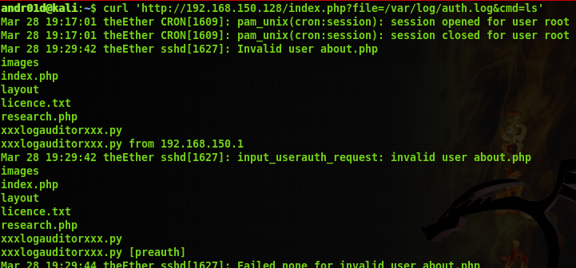

This whole project started out as a ctf on vulnhub.com. Initially, I was doing it for the red team,
which had decided every week we needed a new vulnhub finished. No biggie so far, had two under my belt.
This one was different though. I was reading through several walkthroughs and gathering information on
how local file inclusion vulnerabilities worked. I had recalled several months ago I had stumbled upon
a writeup on someone who wrote a shell that was able to interface with a file listing script stuck
on a website. This gave me the idea to create a shell which would interface with the file inclusion,
effectively giving a full shell, going off the basis that you could read a certain file, and run commands
which would be printed to that file.
The vm which I developed LFInT on is called evilscience, and can be downloaded here
You open the vm, and find it to be headless.
You run a simple nmap scan on this and find some interesting ports open:
Ok, there are decent ports open, but before exploring this, since it is
hosting on port 80, lets just imediately throw a vulnerability scan at it.
As it turns out, there is a possibility of local file inclusions, as hinted
by this scan result:
Next thing, knowing that it might let me see files, is to try to find other
files which are included. Looking through common files included, something catches
my eye. /var/log/auth.log is a commonly included file, and our target is running ssh.
so try to curl this file:
Ok, cool. Now I can read where the logs for authentication over ssh goes. But heres
the thing: Its in HTML thanks to curl. From past experience, I know with some easy
one line php, you can insert a line, for instance,
<?php echo system($_GET['cmd']); ?>
and execute commands on the server. So, why dont I try to use this as my username
for ssh, and curl the page giving it a command?
Now curl:

We have success! Now, this is where I stopped in the CTF challange. The reason being
I immediately started thinking of writing a script which doulc allow me to do so much with
this remote code execution vulnerability. After this point in the challenge, you would typically
run some sort of reverse shell, and get the flags to finish. Honestly, at thsi point, I still
have not finished the challenge. But, out of it, has come this script.
To begin, I started with simple execution through python, specifically using os.system.
Before you laugh and say I dont know how to write python using os.system, just know
that this whole journey has brought me uppon better ways. Here is an example of how
I was curling the website through python at first:
os.system("curl '192.168.150.128/index.php?file=/var/log/auth.log&" + cmd)
Next, I parsed through the files using some very bad file read/write operations.
Using sed and awk, it writes to a file, uses sed to clean up stuff which was specific
to this vm, then uses awk to clean up repeated lines.
Through time though, I decided to make it more like a script, and implement libraries.
The first library which came in handy ws the pycurl library. Logically, this is the
best library to use in this case, as it performs the same operation as curl. Ofcourse
import StringIO for writing and reading the bytes of the curl. This allows for
my curl opperations to be done quite cleanly.
The next steps are quite simple, create some methods to get a working directory,
in the main method include directory traversal, and execute.

The only step left is to parse the information given to us, and have it printed out
to the terminal for a basic shell.
This shell is still in development, but is on my github